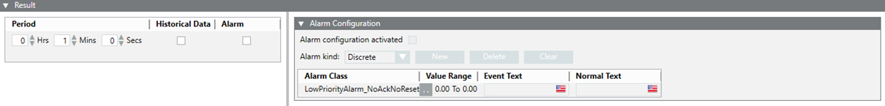

Result Expander
The fields displayed in this expander differ according to the selected device.
- Period: Specify the time period for which the average value is to be calculated for the device.
- Historical Data: Select the Historical Data checkbox if you want to calculate the average value on the basis of historical data.
- Alarm: Select the Alarm checkbox to to setup alarm configuration for the device.
- Alarm Configuration: Allows you configure alarms:
- Alarm configuration activated: Select this checkbox to activate the alarm for the corresponding measuring point.
- Alarm kind: Allows you to choose the type of alarm to be activated.
- New: Allows to add new rows with default alarm class and values.
- Delete: Allows you to delete the selected alarm row.
- Clear: Allows you to remove all alarm conditions from the table and reset the default alarm class.
- Alarm Class: The alarm class to be enabled for an event.
- Alarm Class Operator:
- For Discrete: .. : In range, !.. : Not in range , || : OR, !|| : NOR
- For Continuous: > : Greater than , >= : Greater than or equal to , < : Less than, <= : Less than or equal to
- AlarmValue: The value, or range of values, for which an alarm is to be issued.
- EventText: The text to display when the alarm is issued.
- NormalText: The text to display when the alarm ceases.
- UpperHysteresis: The upper range for the alarm value beyond which alarms will be generated.
- LowerHysteresis: The lower range for the alarm value below which alarms will be generated.
- Formula: Enter the formula and ensure that the formula is syntactically correct. Some examples of syntactically correct formulas are, p1 + p2 + p3, (p1 + p2) / 1000, (p1 || p2) && p3. This is a mandatory field.
- Target Value: Enter a target value. The target value acts as a reference value for the KPI. The target value is not used for any KPI calculations but is used in configuring the range associated with the KPI.
- Calculation Interval: Select a calculation interval from the drop-down list. Depending on the selected interval, the KPI will be calculated every 15 Minutes, Hourly, Weekly, Monthly and Yearly.
- Gauge: Select the range of values along with the color code for the corresponding measurement points in the gauge section. The default range is from 0 to 1000.
Minimum <=Limit 1 ; Limit 1 <= Limit 2 ; Limit 2 <=Maximum.
